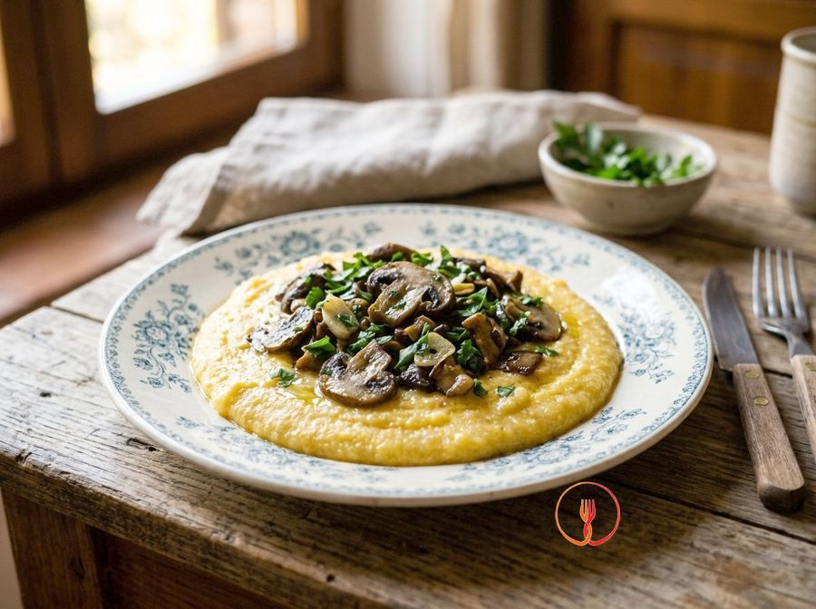

Polenta con funghi trifolati
Polenta morbida con champignon e porcini saltati con aglio e prezzemolo.
Un classico intramontabile della cucina rustica, ideale per le giornate più fredde. La consistenza densa della polenta si sposa perfettamente con il gusto terroso e il profumo intenso dei funghi trifolati in padella.
Ingredienti
- Farina di mais300 g
- Acqua1200 ml
- Funghi champignon400 g
- Funghi porcini secchi20 g
- Aglio6 g
- Prezzemolo10 g
- Olio extravergine d'oliva60 ml
- Sale grosso10 g
- Sale fino3 g
Allergeni
Nessuno dei 14 allergeni principali tra gli ingredienti.
Può contenere tracce di: Glutine.
Procedimento
- Inizia immergendo i 20 g di funghi porcini secchi in una ciotola con acqua tiepida per circa 20 minuti. Una volta rinvenuti, strizzali con cura per eliminare l'acqua in eccesso e tritali grossolanamente su un tagliere. Questa operazione permette ai porcini di sprigionare tutto il loro profumo intenso durante la cottura successiva.
- Mentre i porcini riposano, pulisci con cura i 400 g di funghi champignon rimuovendo la terra e affettali sottilmente. Trita finemente i 6 g di aglio e i 10 g di prezzemolo fresco. Avere tutti gli ingredienti pronti ti permetterà di gestire meglio i tempi di cottura della polenta e dei funghi.
- Versa i 1200 ml di acqua in un paiolo o in una pentola capiente dal fondo spesso e aggiungi i 10 g di sale grosso. Porta il tutto a bollore su fuoco vivace. Il calore costante dell'acqua è fondamentale per una corretta idratazione dei granuli di mais fin dal primo istante.
- Appena l'acqua bolle, abbassa leggermente la fiamma e versa i 300 g di farina di mais a pioggia, molto lentamente. Mescola energicamente con una frusta a mano per evitare la formazione di grumi fastidiosi. Continua a girare finché il composto non inizia ad addensarsi leggermente, diventando cremoso.
- Cuoci la polenta per circa 40 minuti a fuoco dolce, mescolando frequentemente con un cucchiaio di legno. Capirai che è pronta quando si staccherà facilmente dalle pareti della pentola e avrà una consistenza vellutata e densa. Una cottura lenta è il segreto per eliminare il sentore di farina cruda e renderla perfettamente digeribile.
- Circa 15 minuti prima che la polenta sia pronta, scalda i 60 ml di olio extravergine d'oliva in un'ampia padella antiaderente. Aggiungi i 6 g di aglio tritato e i porcini precedentemente ammollati, facendoli rosolare a fuoco medio per un paio di minuti. Sentirai sprigionarsi un aroma boschivo irresistibile che farà da base saporita al piatto.
- Unisci i 400 g di champignon affettati nella padella e alza la fiamma. Cuoci a fuoco vivace per circa 10 minuti, spadellando spesso affinché i funghi diventino dorati e perdano la loro acqua di vegetazione. I funghi devono risultare teneri ma ancora consistenti al morso, non eccessivamente molli.
- Verso la fine della cottura dei funghi, aggiungi i 3 g di sale fino e i 10 g di prezzemolo tritato che avevi preparato. Mescola bene per distribuire i sapori uniformemente in tutto il condimento. Il prezzemolo aggiunto all'ultimo momento manterrà il suo colore verde brillante e il suo profumo vegetale fresco.
- Spegni il fuoco della polenta e lasciala riposare un solo minuto nella pentola per stabilizzare la struttura. Distribuisci la polenta calda e fumante nei piatti fondi e adagia sopra una generosa porzione di funghi trifolati. Servi immediatamente per godere del contrasto tra la morbidezza del mais e la sapidità dei funghi saltati.
Consigli
- Versa la farina di mais a pioggia nell'acqua bollente mescolando subito per evitare la formazione di grumi.
- Pulisci gli champignon con un panno umido invece di lavarli sotto l'acqua per non comprometterne la consistenza.
- Lascia riposare la polenta un minuto prima di servirla per ottenere la densità ottimale.
Varianti
- Aumenta la dose di aglio e prezzemolo nel soffritto per un gusto di funghi ancora più aromatico.
- Prova a lasciare raffreddare la polenta e poi grigliarla a fette per una consistenza più croccante.
Valori nutrizionali (stima)
| Per porzione (388 g) | Per 100 g | |
|---|---|---|
| Energia | 1782 kJ / 426 kcal | 460 kJ / 110 kcal |
| Proteine | 10 g | 2.6 g |
| Carboidrati | 60 g | 15 g |
| di cui zuccheri | 2.6 g | 0.7 g |
| Grassi | 15 g | 4.0 g |
| di cui saturi | 2.2 g | 0.6 g |
| Fibre | 4.8 g | 1.2 g |
| Sale | 3.2 g | 0.8 g |
Valori stimati con l'AI su dati medi CREA / USDA: sono indicativi e non sostituiscono il parere di un medico o di un nutrizionista.
Apri la ricetta nell'app per la lista della spesa, le schede ingredienti e i negozi vicini.